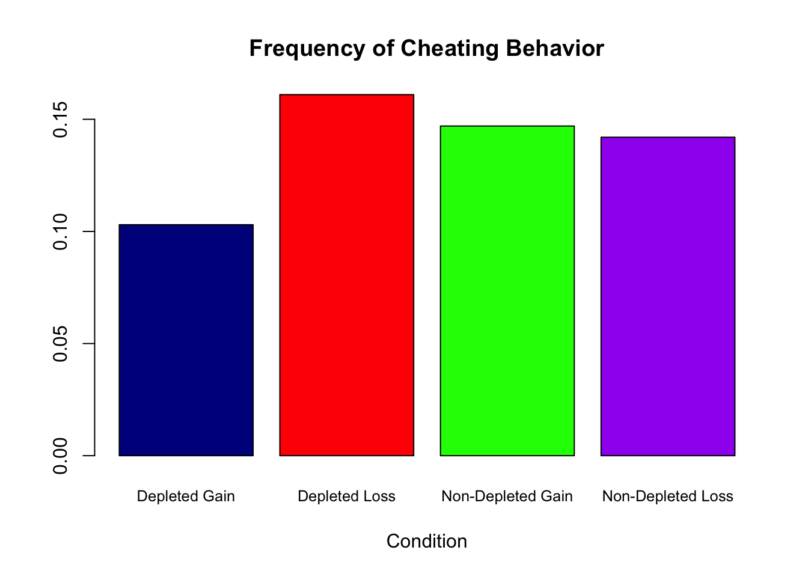

We started by looking at the main treatment effects. We did not find a significant difference in the occurrence of cheating between depleted and non-depleted participants (two-sided Mann-Whitney U test; p = 0.997). We also did not find a significant difference between gain and loss framing (two-sided Mann-Whitney U test; p = 0.468). Proportion tests also confirmed these findings, with no statistically significant difference in cheating between depleted and non-depleted participants (p = 1) and between gain and loss framing (p = 0.638).

Next, we looked at the interaction effect between depletion and framing and identified that there was no statistically significant difference in the occurrence of cheating across the four treatment groups (Kruskal-Wallis test; p = 0.893).
For those who cheated, we thought it would be interesting to examine whether depletion and framing had effects on the magnitude of their cheating. We measured the magnitude of cheating as the difference between the self-reported number of correctly solved matrices and the actual number of correctly solved matrices. To reiterate, only 17 participants (out of 132 participants) displayed cheating behavior; thus limiting the power of our analysis for this dependent variable.
Similarly to DV1, we started by looking at the main treatment effects. We did not find a significant difference in the amount of cheating between depleted and non-depleted participants or between those in the gain and loss frames.
Next, we looked at the interaction effect of depletion and framing on the magnitude of cheating and found a statistically significant difference in the occurrence of cheating across the four treatment groups (Kruskal-Wallis test; p = 0.034). The magnitude of cheating was the largest for non-depleted participants in loss framing; however, this finding is heavily influenced by a single outlier. It is difficult to say whether this participant was simply the only individual who displayed substantial cheating behavior, or if they did not fully understand the instructions. In any event, we elected to include this outlier in our data. Nonetheless, due to the small sample size, and limited power, we do not put much emphasis on this significant finding.
Although we did not find any significant results (with sufficient power), we still ran a regression model that allows us to add controls. We first looked at gender effects as past literature has, in some cases, identified gender differences as it relates to cheating behavior (Tibbetts, 1997; Whitley, Nelson, & Jones, 1999). Data was coded “1” for males and “0” for females. We also discussed the efficacy for controlling for math affinity since those who are better at math might be able to solve more matrices. However, considering our dependent variable of interest is the difference between the self-reported number of correctly solved matrices and the actual number, not the actual number of correctly solved matrices, we decided against it. Hence, we utilized the linear probability model (binomial regression model) to test whether either of the two independent variables (gain/loss framing and depletion) or their interaction has a statistically significant effect on DV1.
##
## Call:
## glm(formula = final_data$cheated ~ factor(final_data$gender) *
## factor(final_data$depleted) * factor(final_data$gain_frame),
## family = "binomial")
##
## Deviance Residuals:
## Min 1Q Median 3Q Max
## -0.8203 -0.5553 -0.5168 -0.3050 2.4864
##
## Coefficients:
## Estimate
## (Intercept) -3.0445
## factor(final_data$gender)Male 1.5041
## factor(final_data$depleted)N 1.0986
## factor(final_data$gain_frame)L 1.0986
## factor(final_data$gender)Male:factor(final_data$depleted)N -1.7554
## factor(final_data$gender)Male:factor(final_data$gain_frame)L -0.4745
## factor(final_data$depleted)N:factor(final_data$gain_frame)L -0.9445
## factor(final_data$gender)Male:factor(final_data$depleted)N:factor(final_data$gain_frame)L 0.7258
## Std. Error
## (Intercept) 1.0234
## factor(final_data$gender)Male 1.2051
## factor(final_data$depleted)N 1.1951
## factor(final_data$gain_frame)L 1.1951
## factor(final_data$gender)Male:factor(final_data$depleted)N 1.7159
## factor(final_data$gender)Male:factor(final_data$gain_frame)L 1.5916
## factor(final_data$depleted)N:factor(final_data$gain_frame)L 1.5468
## factor(final_data$gender)Male:factor(final_data$depleted)N:factor(final_data$gain_frame)L 2.2786
## z value
## (Intercept) -2.975
## factor(final_data$gender)Male 1.248
## factor(final_data$depleted)N 0.919
## factor(final_data$gain_frame)L 0.919
## factor(final_data$gender)Male:factor(final_data$depleted)N -1.023
## factor(final_data$gender)Male:factor(final_data$gain_frame)L -0.298
## factor(final_data$depleted)N:factor(final_data$gain_frame)L -0.611
## factor(final_data$gender)Male:factor(final_data$depleted)N:factor(final_data$gain_frame)L 0.319
## Pr(>|z|)
## (Intercept) 0.00293
## factor(final_data$gender)Male 0.21198
## factor(final_data$depleted)N 0.35797
## factor(final_data$gain_frame)L 0.35797
## factor(final_data$gender)Male:factor(final_data$depleted)N 0.30629
## factor(final_data$gender)Male:factor(final_data$gain_frame)L 0.76562
## factor(final_data$depleted)N:factor(final_data$gain_frame)L 0.54147
## factor(final_data$gender)Male:factor(final_data$depleted)N:factor(final_data$gain_frame)L 0.75009
##
## (Intercept) **
## factor(final_data$gender)Male
## factor(final_data$depleted)N
## factor(final_data$gain_frame)L
## factor(final_data$gender)Male:factor(final_data$depleted)N
## factor(final_data$gender)Male:factor(final_data$gain_frame)L
## factor(final_data$depleted)N:factor(final_data$gain_frame)L
## factor(final_data$gender)Male:factor(final_data$depleted)N:factor(final_data$gain_frame)L
## ---
## Signif. codes: 0 '***' 0.001 '**' 0.01 '*' 0.05 '.' 0.1 ' ' 1
##
## (Dispersion parameter for binomial family taken to be 1)
##
## Null deviance: 101.396 on 131 degrees of freedom
## Residual deviance: 97.994 on 124 degrees of freedom
## AIC: 113.99
##
## Number of Fisher Scoring iterations: 5